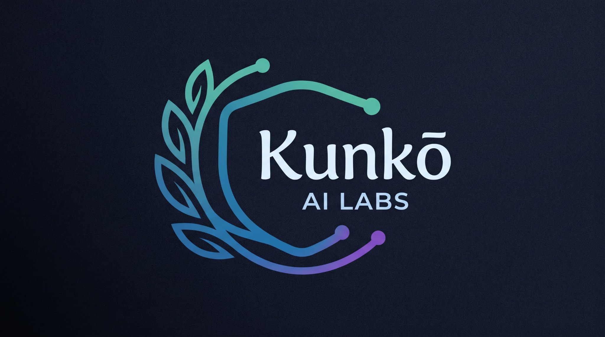

AI now decides what gets shipped, approved, filtered and flagged. But almost nobody measures whether those decisions can be trusted. Kunko AI Labs builds independent assurance for AI decision-making — the statistics that tell you what share of decisions you can automate, at what certified error, with evidence a regulator can read.
AI judges — LLM-as-a-judge systems and probabilistic decision APIs — and AI agents now make consequential calls across customer support, moderation, hiring pipelines, finance and operations. Their vendors publish accuracy benchmarks they ran on themselves. What nobody publishes is calibration: when the system says "90% confident", is it right 90 times out of 100 — or 60?
An overconfident judge doesn't just err. It errs while telling you not to check. That's the failure mode that ships bad decisions at machine speed — and it's invisible to every accuracy leaderboard in the industry.
Meanwhile the clock is ticking: EU AI Act obligations for high-risk systems land in December 2027 — logging, human oversight, demonstrated accuracy and robustness. Most teams deploying AI judges today have no evidence to show. Statistics don't lie — but until now, nobody was computing them.
Judge Audit is the independent harness that audits judge calibration. Point it at any judge plus a dataset with known-correct answers, and it answers the one question that matters: can you trust this judge's confidence? Not with vibes — with statistics that carry confidence intervals, worst-case bounds and reproducible checkpoints.
pip install kunko-judge-audit · github.com/kunko-ai-labs/judge-audit →
Know exactly what you can put on autopilot and at what certified error. Gate releases on calibration drift in CI. Compare vendors on honesty, not on benchmarks they wrote themselves. This is how AI moves from pilot to production without a leap of faith.
Signed, timestamped dossiers: pre-registered hypotheses, worst-bin metrics, raw checkpoints anyone can re-run. Built to map onto EU AI Act duties — logging, human oversight, accuracy and robustness. The file your compliance review has been missing.
Every enterprise AI deployment will need independent calibration evidence. We're building the infrastructure for it — starting with the open-source harness the industry audits itself with.
Our public audits name confident-and-wrong behavior with numbers anyone can reproduce. Trust in AI shouldn't be a vibe — we're making it a measurement.
"The judge sells certainty; the audit sells quantified uncertainty." Every finding ships with raw checkpoints — re-run it yourself.
Judges decide; agents act. Agent Assurance is the other half of the story: declare what your AI agent may do, and verify it on every edit, PR and release. A GitHub Action that checks MCP configs, Claude Code permissions and tool definitions against your policy — deterministic, OWASP-mapped, with signed evidence. Calibration tells you when to trust a decision; guardrails make sure the action stays inside the lines.
We're building in the open, one verifiable layer at a time. The destination is the assurance infrastructure every serious AI deployment will run on — what we ship next stays in the lab until it's evidence.
Open-source calibration audits anyone can run. The credibility layer — live today.
A public, continuously updated ranking of judges by calibration — the honesty leaderboard the industry doesn't have.
Signed audit trails mapped to AI Act obligations. Compliance as an artifact, not a slide deck.
Ongoing calibration watch across your fleet: catch drift before it becomes an incident.
If an AI judge says it's 90% confident across 100 decisions, it should be right about 90 times. If it's right 60 times, it's miscalibrated — overconfident. Calibration is the match between stated confidence and actual accuracy, and it's what makes a judge safe to automate around.
No. Accuracy tells you how often the judge is right; calibration tells you whether you can believe it when it matters. A 95%-accurate judge that reports 99.9% confidence on its errors is more dangerous than an 80%-accurate judge that knows when it's unsure. Automation decisions need the second number.
No. Judge Audit judges nothing — it measures. Given a judge and a dataset with known-correct answers, it computes statistics. That's arithmetic, not opinion, and every number is reproducible from raw checkpoints in the repo.
High-risk AI systems (in force December 2027) need logging, human oversight, and demonstrated accuracy and robustness. Independent calibration evidence — including worst-case metrics, not just averages — is exactly the kind of documentation those obligations call for.
pip install kunko-judge-audit, bring your judge and a labeled dataset, and follow the quickstart in the repo. Pre-register your hypotheses if you want the audit to count as evidence.
Audits, partnerships, enterprise pilots — or just a hard question about your AI judge.
info@kunkoai.com